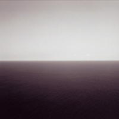

Cómo ir a la nada
Ir a la nada es buscar comprender lo que está más allá de la existencia misma, explorando el vacío absoluto o la ausencia total de ser.
Por ejemplo, si tenemos un tablero de ajedrez vacío, tenemos nada?
Desde una perspectiva filosófica, podríamos considerar que un tablero de ajedrez vacío representa una forma de "nada" en el contexto específico del juego de ajedrez.
En el sentido de que no hay piezas sobre el tablero, podría interpretarse como una ausencia de contenido o de significado dentro del marco del juego de ajedrez. Sin embargo, incluso en esa "nada" aparente, existen potencialidades y reglas implícitas que definen las posibles acciones y movimientos que podrían ocurrir en ese espacio.
Entonces, aunque a simple vista un tablero de ajedrez vacío podría considerarse como una forma de "nada" en el contexto de ese juego en particular, sigue siendo un espacio definido por reglas y posibilidades, lo que lo aleja de ser una "nada" absoluta.
 |
 |
 |
|---|---|---|
 |
 |  |